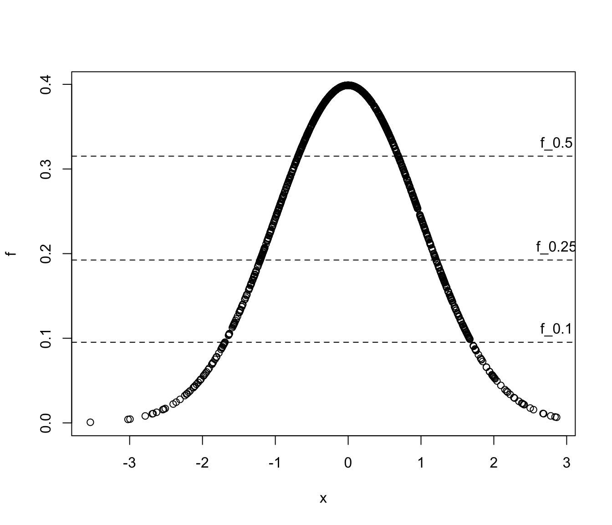
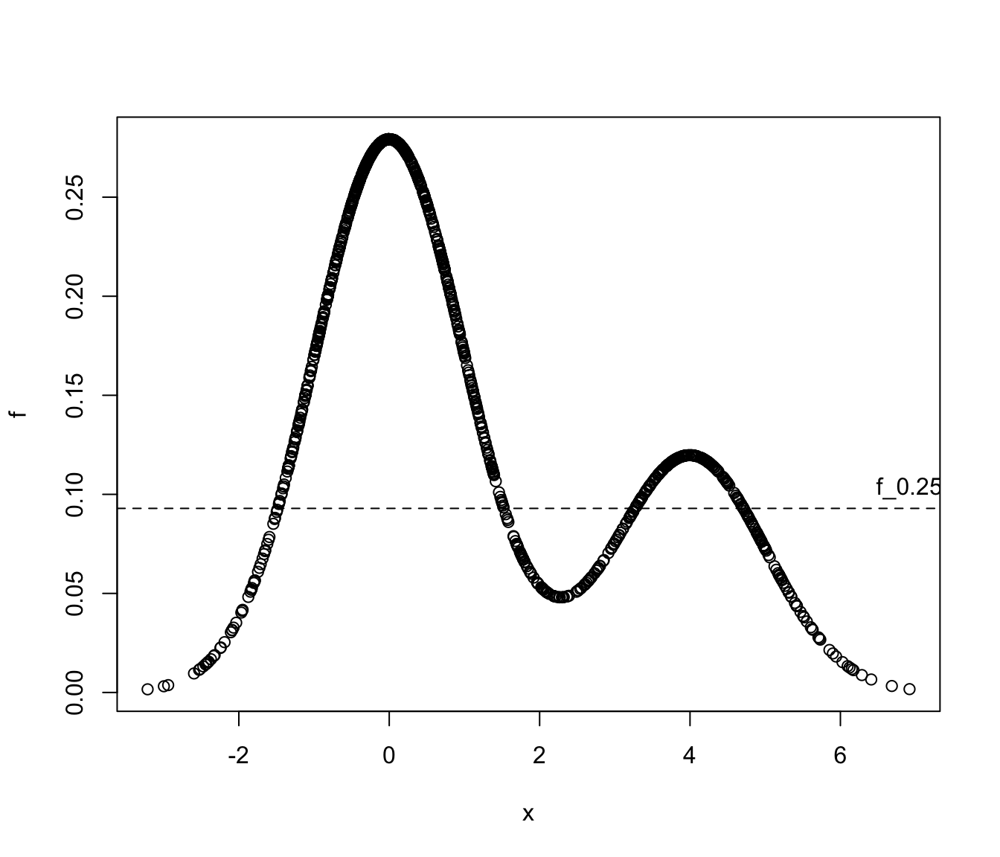
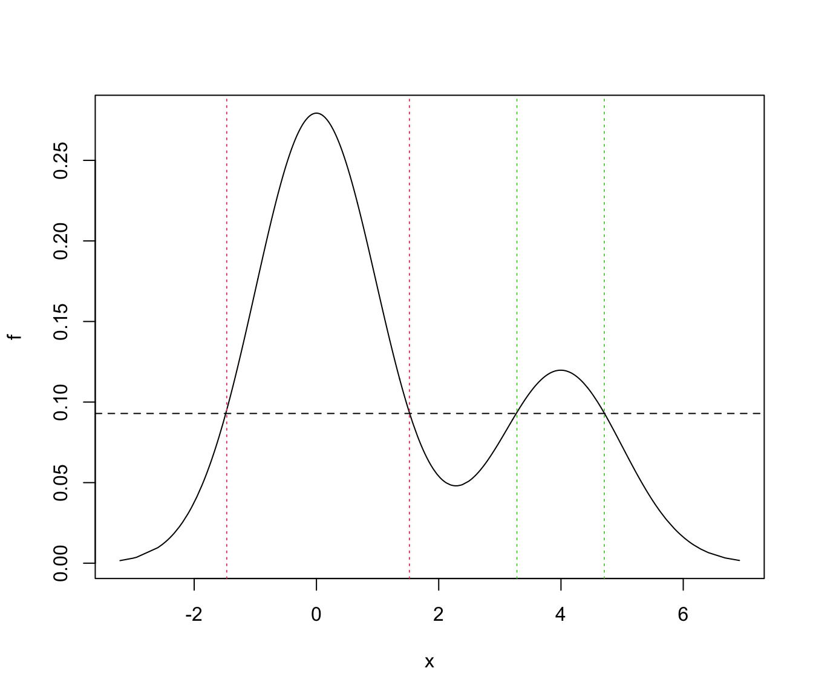

Highest Density Region (HDR) Levels
hdrlevels.RdCompute the levels of Highest Density Regions (HDRs) for any density and probability levels.
Value
The function returns a vector of density values corresponding to HDRs at given probability levels.
Details
From Hyndman (1996), let \(f(x)\) be the density function of a random variable \(X\). Then the \(100(1-\alpha)\%\) HDR is the subset \(R(f_\alpha)\) of the sample space of \(X\) such that $$ R(f_\alpha) = {x : f(x) \ge f_\alpha } $$ where \(f_\alpha\) is the largest constant such that \( Pr( X \in R(f_\alpha)) \ge 1-\alpha \)
References
Rob J. Hyndman (1996) Computing and Graphing Highest Density Regions. The American Statistician, 50(2):120-126.
Examples
# Example: univariate Gaussian
x <- rnorm(1000)
f <- dnorm(x)
a <- c(0.5, 0.25, 0.1)
(f_a <- hdrlevels(f, prob = 1-a))
#> 50% 75% 90%
#> 0.31514979 0.19243395 0.09530682
plot(x, f)
abline(h = f_a, lty = 2)
text(max(x), f_a, labels = paste0("f_", a), pos = 3)

mean(f > f_a[1])
#> [1] 0.5
range(x[which(f > f_a[1])])
#> [1] -0.6837973 0.6861459
qnorm(1-a[1]/2)
#> [1] 0.6744898
mean(f > f_a[2])
#> [1] 0.75
range(x[which(f > f_a[2])])
#> [1] -1.207002 1.199588
qnorm(1-a[2]/2)
#> [1] 1.150349
mean(f > f_a[3])
#> [1] 0.9
range(x[which(f > f_a[3])])
#> [1] -1.691589 1.671045
qnorm(1-a[3]/2)
#> [1] 1.644854
# Example 2: univariate Gaussian mixture
set.seed(1)
cl <- sample(1:2, size = 1000, prob = c(0.7, 0.3), replace = TRUE)
x <- ifelse(cl == 1,
rnorm(1000, mean = 0, sd = 1),
rnorm(1000, mean = 4, sd = 1))
f <- 0.7*dnorm(x, mean = 0, sd = 1) + 0.3*dnorm(x, mean = 4, sd = 1)
a <- 0.25
(f_a <- hdrlevels(f, prob = 1-a))
#> 75%
#> 0.09291342
plot(x, f)
abline(h = f_a, lty = 2)
text(max(x), f_a, labels = paste0("f_", a), pos = 3)

mean(f > f_a)
#> [1] 0.75
# find the regions of HDR
ord <- order(x)
f <- f[ord]
x <- x[ord]
x_a <- x[f > f_a]
j <- which.max(diff(x_a))
region1 <- x_a[c(1,j)]
region2 <- x_a[c(j+1,length(x_a))]
plot(x, f, type = "l")
abline(h = f_a, lty = 2)
abline(v = region1, lty = 3, col = 2)
abline(v = region2, lty = 3, col = 3)
